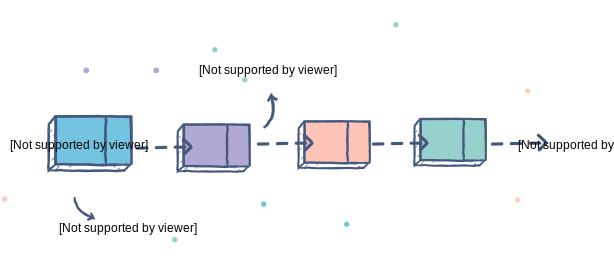
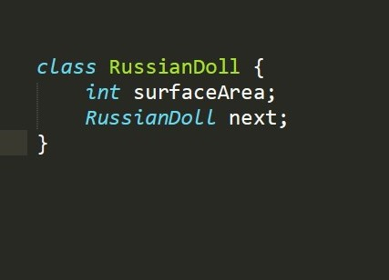
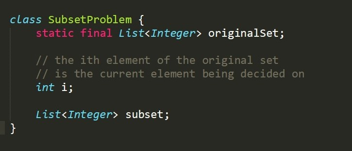
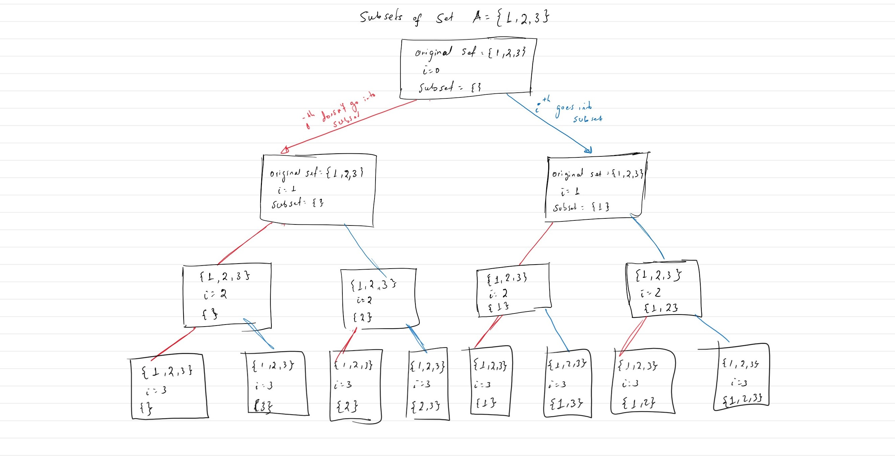
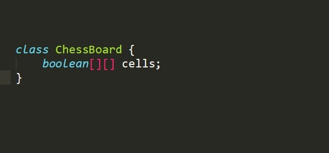

Algorithms
Decision trees, recursion, backtracking
Recursive structures
A recursive data type is one that's composed of objects of the exact same type. One helpful analogy would be to think of Russian dolls.
Taking off the outer 'Russian doll' will result in another 'Russian doll' of smaller size. This will go on until the last piece of Russian doll which is the smallest doll.
From a more technical perspective, Linked structures such as linked lists trees, graphs are some common examples of recursive data types. This is because a single node in these structures points to(is composed of) one or more nodes of the exact same type. The relationship between the nodes in these structures is explicitly defined so it's easier to see how they fit in.
Each object in these recursive data types represents a problem of varying size (or sub-problems). The following class may represent Russian dolls of varying size:
So, recursion is helpful for problems that can be encapsulated by such data types. To recap, the structures that exhibit these 'chained' behaviors are known as recursive data types while the main algorithm that manipulates and traverses the chained sub-problems to find some solution is called recursion. With the basics out of the way, the remaining note will look at examples of problems whose structures resemble that of recursive data types.
The first example is a problem involving subsets. Given a set of elements, what does it mean to find its subsets? Finding all subsets is just a matter of going through each element of the set and deciding if that element should go into the subset or not. Once every element has been decided upon, the elements in the subset make up one solution. However, a different a set of decisions on the elements of the set may result in a different subset at the end. So, one way of encapsulating this problem that changes its state based on the applied decision is using the following definition:
Every time a decision is made on an element, a new instance of the problem is created. Maybe this new instance will have an additional element in its subset or it may not. The decision tree, along with the state of the instances, is shown below:
It's easier to see, in the picture above, how the subset problem defined above can be encapsulated as a recursive structure. In fact, it really just looks like a binary tree where each node represents an instance of the problem, and the edges represent the decision taken to convert the problem from one state to another.
Representing problems as recursive structures is the first step. It's equally important to traverse and manipulate these structures to get to a solution of the problem. There are generally two ways to traverse such type of structures: Breadth first traversal and Depth-first traversal. In this case, traversing the structure means exploring different states of the problem. Notice how all the instances that are leaves of the tree structure represent all the possible subsets of the original set. So, if the goal is to find all the subsets, the solution would be to traverse the tree and return all the nodes. If the goal is to find the subset with the most sum, the solution is still going to be one of the leaves. Regardless, the key to the solution is still somehow traversing the structure.

Another example is the N-Queens problem. Given an N by N Board, the goal is to decide where to put N queens on the board so that none of the queens attack each other. For ease of visualization, let N be 4. The first move involves placing the first queen somewhere on one of the 16 cells of the chess board. Given that decision is made, the state of the board will change, and there will be 15 empty cells left on the board. Here is one way of encapsulating the problem:
Every move will transition the board from one state to another linking related board states, and very much like the subset problem, it will form a tree structure where the nodes represent states or instances of the board and the edges represent moves that result in state transitions. So, the visual representation of this problem resembles that of a recursive data type. Leaves of this structure represent states where all N queens have been placed. Some of the leaves may be ones where the queens don't attack each other. So, to solve this problem, traversing the tree recursive structure to get to the desired leaf nodes is key.
In some instances, simply traversing all the nodes of recursive data types may be unnecessary. So, there are 'smarter' approaches that optimize the traversal algorithm. One technique is called constraint programming. In constraint programming, the idea is to constrain the number of new states that can arise from the current state based on what is known about the current state of a problem. For example, if the first queen is placed on the top left corner of the chess board, the algorithm should avoid placing the next queen on any of the crossed out cells shown below since that will lead to two queens attacking each other. So, those new potential board states should not even be an option, and the algorithm should determine that based on the current move it is making.

Similarly, while traversing recursive structures, the recursive algorithm may encounter the same sub-problem again. Instead of having to re-compute the solution to those subproblems, it's better to save the solution the first time the problem's solution is computed. Then, the next time the algorithm encounters the same instance and is about to make the same set of decisions, it would know the outcome immediately without having to do additional work to compute the solution. This technique of optimizing such type of situations is called dynamic programming.